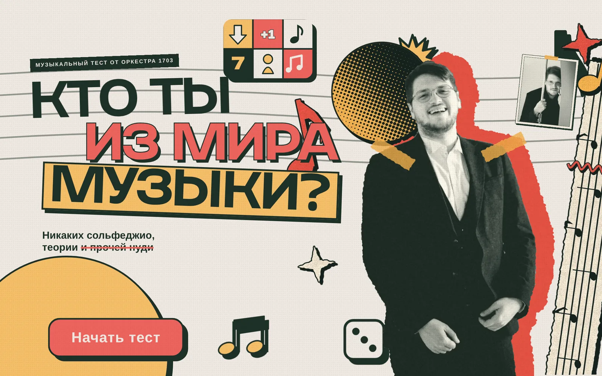
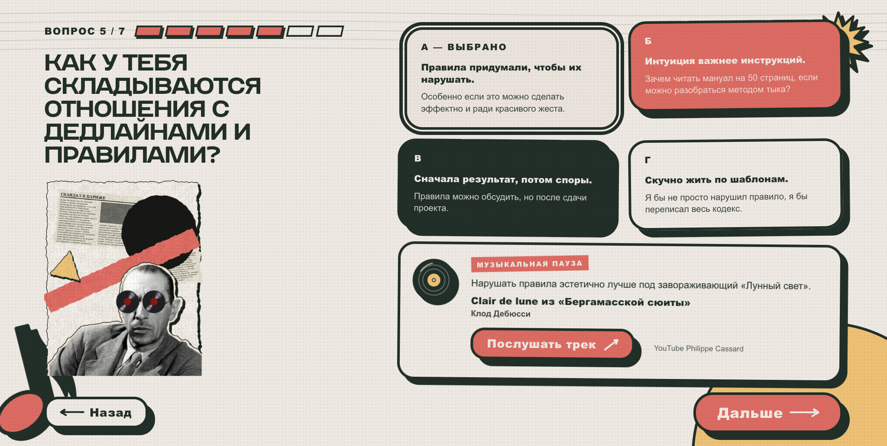
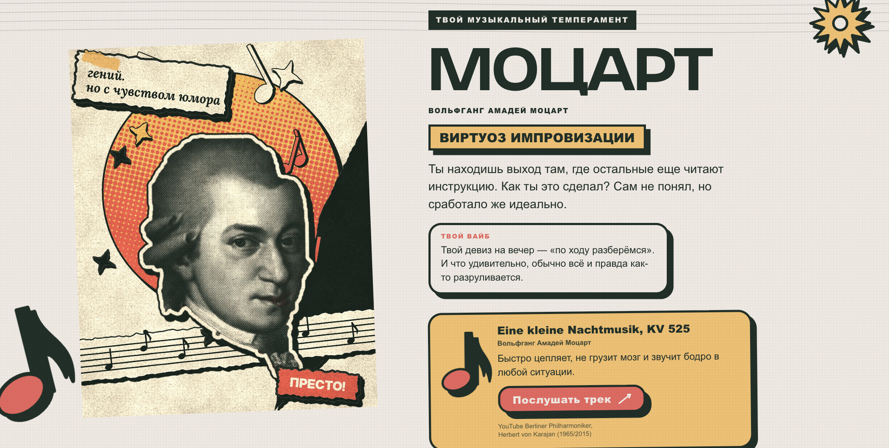
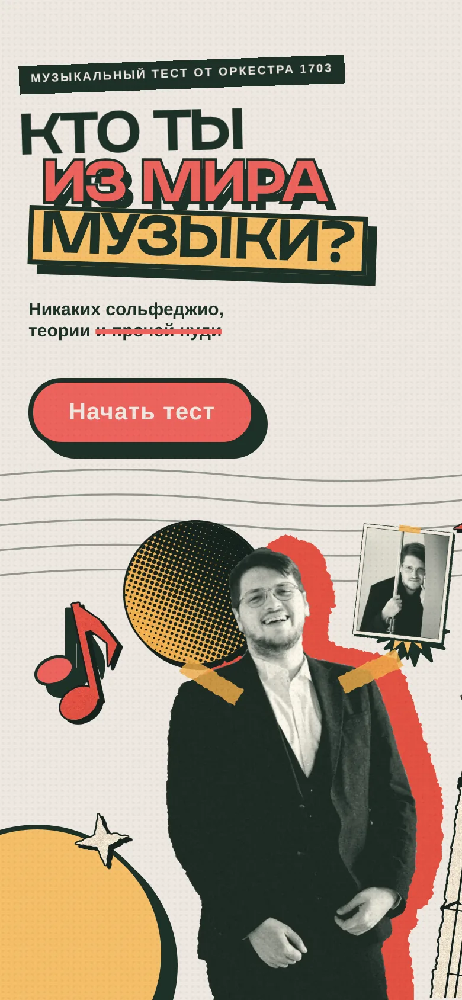
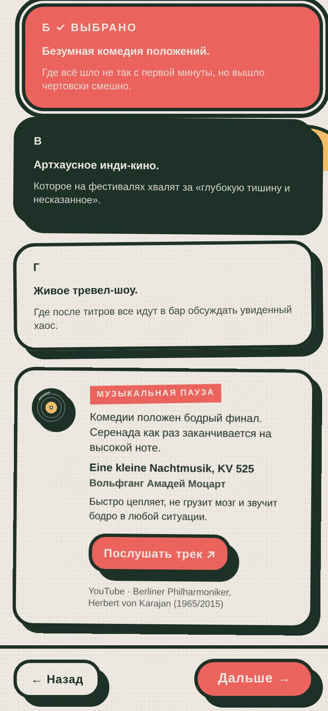
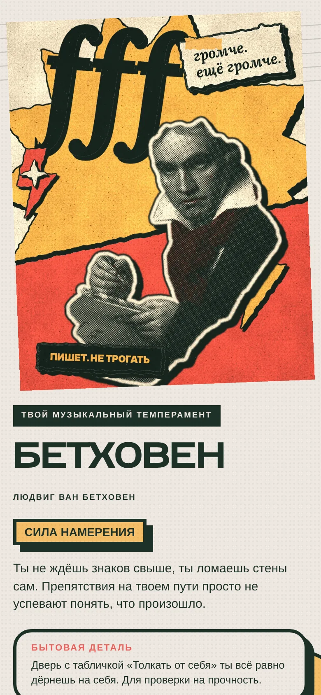

№ 003. QUIZ1703.EXE
Orchestra 1703: кто ты из мира музыки?
Интерактивный тест по заказу Оркестра 1703
- Роль
- Дизайн по брендбуку, коллажи, UX и сборка прототипа
- Инструменты
- Figma, Claude (сборка на React, HTML/CSS)
01 Контекст и цели
Оркестр 1703 — петербургский оркестр под руководством Георгия Фёдорова. Тест «Кто ты из мира музыки?» я делала по их заказу.
Хотелось познакомить зрителей с коллективом и позвать на выступления. Главная задача квиза в том, чтобы человек послушал музыку прямо по ходу прохождения и захотел сходить вживую. В конце каждого вопроса всплывает плашка с треком под настроение вопроса — а там уже раз, и билет на концерт купить захотелось.
В ноябре 2026 тест запустили на сайте оркестра, он теперь живёт по адресу https://orchestra1703.com/quiz/, а на главной странице добавили блок с приглашением его пройти.
02 Задача
Классическую музыку часто подают как сухую энциклопедическую справку. Мне нужно было сделать так, чтобы человек без музыкального образования дошёл до конца, улыбнулся, включил пару треков прямо внутри теста и в финале захотел пойти на концерт Оркестра 1703.
03 Концепция и визуальный стиль
Вместо скучной теории здесь живые характеры: вопросы про сорванные планы, дедлайны, вечеринки и сборы в дорогу, а в финале — композитор-архетип. Настрой задаём с порога («Никаких сольфеджио, теории и прочей нуди») и закрепляем в конце («Игровой тест, а не диагноз от психотерапевта»).
Визуально проект построен на книжной вёрстке и коллажах из портретов композиторов, нотных листов, винила, кассет и рваной бумаги с плотными обводками и резкими тенями. Палитра тёплая — глубокий зелёный, коралловый, горчичный и кремовый. Экраны плавно выезжают, варианты ответов появляются по очереди, а между вопросами по экрану пролетают ноты.
Цвет
- Глубокий зелёный#1D3028 — текст, обводки, тени
- Коралловый#EC635D — действия, выбранный ответ
- Горчичный#F4BE68 — плашки, акценты
- Крем#EFE8E1 — фон
- Бумага#E2D6C8 — карточки, коллаж
Шрифты
- Despair Displayзаголовки
- Steppeтекст и интерфейс
- Druzhokдекоративные надписи
04 Ключевые UX/UI-решения
-
Жизненные ситуации вместо теории
Каждый вопрос описывает знакомую бытовую ситуацию и предлагает четыре варианта реакции. Чтобы пройти тест, не нужно разбираться в музыке или знать нотную грамоту.
-
Прогресс и навигация всегда на виду
Счётчик «Вопрос N / 7» вместе с кнопками «Назад» и «В начало» помогает сразу видеть, сколько шагов осталось, и позволяет вернуться, если захотелось поменять ответ.
-
Музыкальная пауза после каждого вопроса
После выбора ответа появляется карточка с треком под настроение и кнопкой «Послушать трек», поэтому человек знакомится с репертуаром уже по ходу игры, а не только в финале.
-
Персональный постер в финале
В конце пользователь получает иллюстрированный постер своего архетипа с точным эпитетом, забавной бытовой деталью и персональной рекомендацией, что послушать прямо сейчас.
-
Мягкий переход к покупке билетов
Завершает результат блок «Хочешь услышать музыку вживую?» со ссылками на соцсети оркестра и ближайшую афишу. Так тест заканчивается не сухими баллами, а живым приглашением на концерт.
-
Доступность и мобильная адаптация
Варианты ответов собраны на нативных радиокнопках, фокус автоматически переходит на заголовок результата, анимации уважают системную настройку уменьшения движения, а раскладка отдельно адаптирована под смартфоны.
05 Экраны, макеты и адаптив












06 Реализация
- Придумала и собрала все коллажи для теста, включая портреты композиторов, сцены вопросов и финальные постеры. Всю графику строила по брендбуку оркестра, используя их фирменную палитру, шрифты и декоративные элементы.
- Интерактивный прототип на React собирала с помощью Claude, а после сама настраивала вёрстку и анимацию, чтобы слои в сценах композиторов появлялись по очереди.
- Перенесла тест на основной домен оркестра, чтобы он быстро и стабильно открывался в России без сторонних сервисов, а заодно подключила Яндекс Метрику и общую с сайтом плашку про cookie.